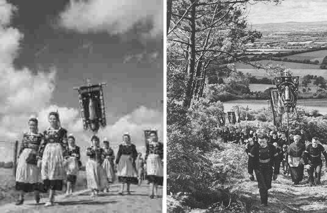
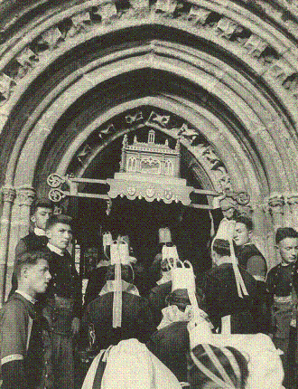
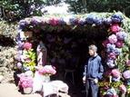
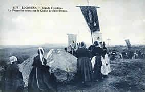
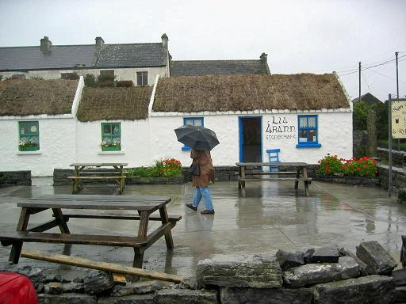
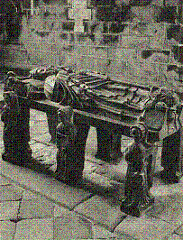
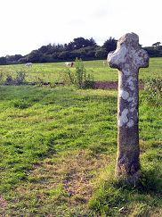
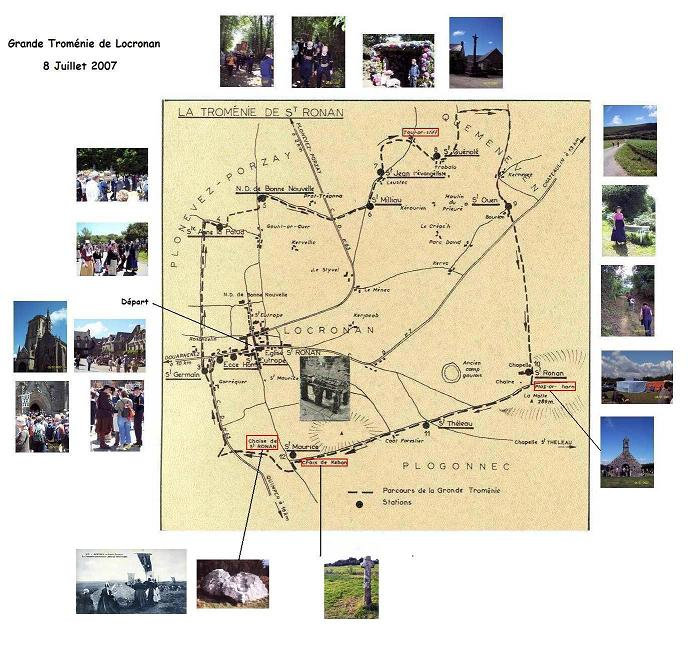

Légende de Saint Ronan
The Legend of Saint Ronan
Dialecte de Cornouaille
|
Dans l'argument de 1839, repris presque à l'identique en 1845, on lit: "Ronan vivait sous le règne de Gradlon, chef Cambrien qui avait suivi Maxime et Conan Mériadec en Armorique au Vème siècle. Nous ne savons si l’on doit croire, avec quelques historiens, que ce prince ait travaillé à l'oeuvre de la destruction du druidisme de concert avec saint Guénolé, saint Kaourantin et Saint Ronan." Le collecteur considère le chant antérieur au 12ème siècle du fait "qu’en décrivant les funérailles du saint et le lieu où il est enterré, le poëte ne fait aucune mention de l’église qu’on éleva, au douzième siècle, sur son tombeau". Ces affirmations disparaissent en 1867. Elles sont remplacées par des références latines: - un bréviaire léonnais imprimé en 1516 - un bréviaire de Quimper reproduit par le Jésuite liégeois Jean Bolland (1596- 1665) dans ses "Vies des Saints", - et le recueil des Blancs Manteaux, 38 ème volume, de très anciens manuscrits latins transcrits essentiellement par le Bénédictin Dom Lobineau pour composer une histoire de la Bretagne. La Villemarqué conclut à une origine commune de ces textes et de la légende bretonne. |
 |
The 1839 "argument", which is kept nearly identical in the 1845 edition, reads as follows: "Ronan lived in the reign of Gradlon, a Welsh ruler who had come over to Armorica along with Maximus and Conan Meriadec in the 5th century. We wonder if we are to believe, as some historians do, that this prince was instrumental in the suppression of the Druidic religion, backing the efforts of Saint Guénolé, Saint Corentin and Saint Ronan." The collector dates the song at the earliest to the 12th century, since: "In the description he makes of the Saint's funeral and burying place, the poet does not mention the church that was erected in the twelfth century over the Saint's grave". These peremptory statements are withdrawn from the 1867 edition. They are replaced by Latin references: - a Léon breviary printed in 1516, - a Quimper breviary which was copied by the Liège Jesuit John Bollandus (1596- 1665) in his "Lives of the Saints", - the 38th volume of the "Blanc-Manteaux" collection of very old Latin manuscripts, mostly gathered by the Benedictine friar Dom Lobineau to compose a history of Brittany. La Villemarqué concludes that these texts and the Breton ballad have a common origin. |
L'ancienne Vie rimée de Saint Ronan
|
NOTE
Il existe une "Vie rimée" de Saint Ronan" datant du début du18ème s. intitulée "Cantic voar buhez ha maro an Autrou sant Ronan, patron eus Locronan Coat-Nevet" (en "breton de curé"). L'auteur, chapelain du Prieuré de Locronan, affirme avoir composé son œuvre à partir de la vie du saint et des archives paroissiales, mais il a également puisé largement dans la tradition orale locale. (une strophe le confirme: ‘Ar re coz o deus lavaret..." (les anciens ont dit). Le cantique complète la "Vie latine de Saint Ronan" jusqu'à la mort du saint, en ajoutant quelques traits: En arrivant à la forêt de Névet Ronan commence par en chasser ‘‘des serpents et de nombreux sorciers '' (Ac'hano e chasseas timat / ar serpentet emez ar ch'oat / hac un nombr bras a sorcerien). Il s'en écarte en renvoyant après le procès de Ronan à Quimper la visite du roi Gradlon et l'histoire du loup apprivoisé. L'auteur montre, en outre, le roi, impressionné par le miracle de l'enfant ressuscité, se rendant ‘'avec tout son train" ( gant e drain ] à l'ermitage du saint et celui-ci nourrissant ises visiteurs royaux de ‘ deux petits poissons et de trois pains '" ( daou besquic ha tri bara ). On notera que cette double interversion dans l'ordre des épisodes par rapport à la Vie latine se retrouve exactement dans le texte d'Albert Le Grand. Le cantique raconte encore comment Dieu en punition d'une agression par des rôdeurs armés de "bizhier a zaou ben" (bâtons à deux têtes) envoya sur le pays une peste ‘dure et cruelle' et comment Ronan retourna en Léon (qui dans le cantique remplace le Hillion de la Vie latine, de même que les 3 comtes qui se disputent les reliques du saint sont remplacés par des évêques , comme sur le médaillon sculpté de la chaire de l'église de Locronan. Le cantique relate ensuite la rencontre du char funèbre avec Kében qui de son battoir ( golvaz prenn ) abat la corne qui tombe à Plas-ar-C'horn et se remet en place à Bez-Keben où la mégère est "enterrée en terre profane, sur la grand route, loin du tombeau du saint, pour servir d'exemple aux méchants, sur le mont entre les deux paroisses, pour qu'on s'en souvienne à jamais. Et tant qu'il y aura de la terre à cet endroit, on l'appellera la Tombe de Keben''. Le cantique évoque ensuite la Troménie que l'on fait tous les six ans en souvenir du tour que faisait le saint à jeûn autour de son ermitage ‘’pour éloigner les loups". Vient ensuite le récit des miracles de la Troménie : les croix et les bannières sortant toutes seules et les cloches sonnant d'elles-mêmes un jour où la procession n'avait pu se faire, les bannières restant sèches sous une pluie diluvienne, des langues de feu allant et venant au-dessus du reliquaire de saint Ronan pendant la procession de 1689 (rapport notarié conservé aux archives paroissiales). Le cantique évoque enfin les générosités des ducs de Bretagne, puis du roi et des princes, envers Locronan, en récompense des guérisons miraculeuses obtenues sur le tombeau ou à la fontaine du saint que l'on fête le 1er juin. Le cantique était à l'origine composé de quarante-huit sizains qu'on découpait en douze unités de 4 strophes dont le contenu correspond à peu près au trajet suivi par la troménie: le retour du convoi et la rencontre avec Keben entre la 8ième et la 9ème station, De Trobalo à Kernévez; récit de la chute de la corne et de la mort de Keben en montant vers Plas ar c'horn, etc. Au cours du temps le chant a été raccourci et son style amélioré. En 1911 il n'avait plus que 32 couplets et on n'en chante plus que 11 aujourd'hui. On lui préfère le texte d'une feuille volante, intitulée ‘’Vieux cantique en l'honneur de saint Ronan des 15, 16 et 17ème siècles". Ce n'est rien d'autre que la gwerz du Barzhaz Breizh de 1839) débarrassée de ses imperfections linguistiques les plus grossières, Elle est dune qualité poétique très supérieure à la "Vie rimée", mais d'un intérêt moindre sur le plan historique et légendaire, car moins authentique. |
NOTE
There is a "Rhymed Life" of Saint Ronan" dating from the beginning of the 18th century entitled "Cantic voar buhez ha maro an Autrou sant Ronan, patron eus Locronan Coat-Nevet" (in "Breton priest's language") The author, a chaplain of Locronan Priory, claims to have based his work on the "Vita" of the saint and the parish archives, but he also drew quite a lot from the local oral tradition (as stated in the stanza: ‘Ar re coz o deus lavaret..." (as the ancients said). The hymn completes the narrative of the "Latin Life of Saint Ronan" until the death of the saint, adding a few features: Arriving at Névet Wood, Ronan begins by driving off ''snakes and many wizards '' (Ac'hano e chasseas timat / Ar serpentet emez ar ch'oat / Hac un nombr bras a sorcerien). It diverges from its model by postponing after Ronan's trial in Quimper the visit of King Gradlon and the story of the tamed wolf. The author also shows the king, impressed by the miracle of the resuscitated child, going ''with all his train" ( gant e drain ] to the hermitage of the saint, who fed his royal visitors ' two small fish and three loaves '" ( daou besquic ha tri bara ). Note that this double inversion of the episodes related in Ronan"s Latin Life also exists in Albert Le Grand's version. The hymn also tells us how God in punishment for an aggression by prowlers armed with "bizhier a zaou ben" (two-headed sticks) sent on the country a ' hard and cruel' plague and how Ronan returned to Leon (which in the hymn replaces Hillion Town of the Latin Life, just as the 3 Counts who dispute the relics of the saint are replaced by bishops , as on the medallion carved on the pulpit of Locronan church. The hymn then recounts the meeting of the funeral chariot with Kében who with her wooden beater ( golvaz prenn ) knocks down the bull's horn which falls at Plas-ar-C'horn and turns back to its place at Bez-Keben place where the bad woman is "buried in profane earth, by the main road, far from the tomb of the saint, to serve the wicked as a warning uphill between two parishes, for them to remember forever. And as long as there is earth there, it will be called "Keben's Tomb''. The hymn then evokes the Troménie performed every six years in memory of the fasting tour the saint took around his hermitage "to ward off the wolves". Then the story of the Troménie miracles : how the crosses and banners left from church by themselves and the bells were ringing also by themselves, since the procession could not take place on that day, and the banners remained dry in the pouring rain, as tongues of fire were coming and going above Saint Ronan's shrine during the procession of 1689 (as recorded in a report preserved in the parish archives). Finally, the hymn tells us of the generosity of the dukes of Brittany, then of the king of France and the princes, towards Locronan, in reward for the miraculous cures obtained on the tomb and fountain of the Saint who is celebrated on the 1st June. The hymn was originally made up of forty-eight six line stanzas which were divided into twelve units of 4 stanzas so as to roughly tally with the stations of the Troménie: the return of the funeral chariot and its encountering Keben between the 8th and 9th stations, From Trobalo to Kernévez station; story of the falling off horn and the death of Keben on the way up to Plas ar c'horn station, etc. Over time the song shrank as its style improved. In 1911 there were only 32 stanzas left and only 11 are sung today. They prefer the text of a broadside sheet, entitled "An old hymn in honour of Saint Ronan from the 15, 16 and 17th centuries". It is, in fact, the gwerz of the 1839 Barzhaz Breizh stripped of its grossest linguistic imperfections, It is of a poetic quality much superior to the above "Rhymed Life", but of less interest from a historical and hagiographic point of view, because wanting authenticity. |
"Buhez ha maro Sant Ronan Loukarnan Koad Nevet"
Chant c-00310 gant Chapalain
"War ton 'Gwerz Holofernes'" selon indication
de la feuille volante Kerangal F-00232,
Unique chant (46 c. de 6 v. 8p.)
Abbaye de Landévennec, cote 18-060.
Interprète: Chorale Kanerien Bro Léon Landiviziau,
PONDAVEN Gérard (Harmonium), ABJEAN René (Direction)
|
Hirio bennigomp unanet
Sant Ronan hor pastor karet Da vezañ roet un donezon E-barzh er vro hag er c’hanton, En ur lezel e gorf santel O vervel war douar Breizh-Izel. Pedit evidomp, sant Ronan, Pedit vit parrez Lokronan, |
Eus an Irland oa genidig
A dud kristen ha pinvidig: Yaouankig e troas e spered Da gaout deskadurezh ar bed, Mes er furnez, er santelez E kreske c’hoazh muioc’h bemdez. Grit d’eomp holl bezañ vertuzus Ho karout ha karout Jezuz, |
Er c’hoad zo añvet Koad-Neved
El-lec’h m’en-devoa pell bevet Er binijenn, en orezon, Eno eo miret e galon, Evit ma vezo enoret Gant pedennoù ar Vretoned. Ha preparit d’ho pugale |
Un dro bep c’hwec’h bloaz a vez graet:
An Dromeni ez eo añvet Ar Sant war yun hen grae bemdez E-pad ma'z eo bet e buhez. Tont da teir lev war-dro e di. Da bellaat dioutañ ar bleizi. Ur plas en ho kichenn en Neñv! |
Autre mélodie: "Kantikoù" pour la Troménie des pèlerins
Archevêché de Quimper (1953)
| Français | English |
|---|---|
|
A vu le jour dans l'île d'Irlande, Là-bas au-delà de l'océan. Il est issu de princes puissants. 2. Un jour il eut, étant en prière, Une vision extraordinaire, Un bel ange revêtu de blanc Qui vint à sa rencontre en disant: 3. Ronan, il faudra quitter ce lieu, Pour obéir à l'ordre de Dieu Et que pour ton salut tu t'en ailles Evangéliser la Cornouaille. - 4. Ronan obéit à l'ange et vint Demeurer en Bretagne, non loin Du rivage en Léon et après En Cornouaille au Bois de Nevet. 5. Il y avait deux ou trois ans, je pense, Qu'il faisait en ces lieux pénitence, Lorsqu'un soir qu'il était en prière, Devant sa porte et face à la mer, 6. Il vit un loup bondir hors du bois, Dans sa gueule une brebis, sa proie, Poursuivi par un pauvre homme en pleurs Sanglotant, haletant de douleur. 7. Ronan eut pitié du malheureux, Et pria pour lui le Seigneur Dieu: - Seigneur, si c'est votre volonté, Que cette brebis soit épargnée!- 8. Sa prière n'était pas finie, Que le loup a rendu la brebis, Saine et sauve devant la maison, Aux pieds de Ronan et du Breton, 9. Que depuis ce jour, on vit souvent Entrer dans la maison de Ronan. On pouvait les entendre tous deux S'entretenir des choses de Dieu. 10. Mais le pauvre homme avait une femme, Qu'on nommait Kéban, un être infame Laquelle perdant son ascendant, Sur son mari, haïssait Ronan 11. Un jour elle entra dans sa maison L'accabla d'injures et d'affronts - Vous avez ensorcelé les gens, Mon mari, ainsi que mes enfants. 12. Ils ne font que vous rendre visite, Ma vie de ménage est déconfite. Si vous refusez de m'écouter, Gare à vous, vous aurez beau japer! - 13. Elle forma le projet odieux D'opprimer le saint homme de Dieu: Elle s'en fut chez le roi Gradlon, Dans sa cité, au delà du mont. 14. - O Seigneur roi, veuillez m'écouter: Ma fillette a été étranglée. Ronan du Bois Nevet fit le coup. Je l'ai vu qui se changeait en loup. 15. Sur l'accusation de la mégère, On a conduit Ronan à Quimper, Et jeté dans un cachot profond, Par ordre du seigneur roi Gradlon. 16. Un beau jour on le tira de là Et au tronc d'un arbre on l'attacha. Et sur le saint homme on a lâché Deux gros chiens sauvages affamés. 17. Lui, sans s'émouvoir, sans avoir peur, Fit un signe de croix sur son coeur, Les chiens s'enfuirent soudain, tous deux En hurlant, comme devant un feu. 18. Ce que voyant, le roi Gradlon dit A l'homme de Dieu: -Que vous faut-il Pour apaiser de Dieu le courroux Dont on voit bien qu'Il est avec vous ? 19.- Sire, je ne vous demande rien Que la grâce de cette Kéban. Dont le petit enfant n'est pas mort, Mais dans son coffre où il vit encor.- 20.On apporta le coffre, et l'ouvrant On y trouva le petit enfant : Il était couché sur le côté, Mort : Saint Ronan l'a ressuscité. 21. Tombant aux genoux de saint Ronan Devant ce miracle stupéfiant, Tous ainsi que le seigneur Gradlon S'empressent de demander pardon. 22. Mais lui, s'en revint à la forêt, Où jusqu'à sa mort il est resté, Faisant pénitence, loin de tout, Pour reposer sa tête un caillou, 23. Une peau de bête pour vêture, Une branche tordue pour ceinture, Pour toute boisson, de l'eau croupie, Et sous la cendre du pain qui cuit. 24. Lorsque sa dernière heure arriva, Qu'il eut quitté ce monde, ici-bas, Trois évêques et deux buffles blancs Vont traînant sa charrette à pas lents. 25. Arrivés au bord d'une rivière, C'est Kéban, décoiffée, qu'ils trouvèrent Faisant la buée le vendredi, Le jour où notre Sauveur périt. 26. Brandissant son battoir sans vergogne, Elle frappe un des boeufs à la corne, Si fort que le buffle épouvanté En eût même la corne arrachée. 27 - Retourne donc, charogne, à ton sort ! Va-t-en pourrir avec les chiens morts ! On ne te verra plus, de sitôt, Nous abuser avec de vains mots. - 28. Elle était occupée à maudire, Quand le sol s'ouvrit pour l'engloutir Parmi flammes et charbons ardents, Au lieu dit "la tombe de Kéban" . 29. Le convoi repartit lentement, Portant vers sa tombe Saint Ronan, Puis les boeufs s'arrêtèrent soudain, Et refusèrent d'aller plus loin. 30. C'est là que le Saint fut enterré - C'était sans doute sa volonté - Au sommet du mont, dans le bois vert, Face à face avec la grande mer. |
Who was born on the Isle of Eire, In Saxon land, beyond the sea, High rulers in his pedigree. 2. Once, as he was on his knees and prayed, He saw a dazzling light that spread, An angel clad in white who told Him these words on behalf of God: 3. - O Ronan, far to travel away You're ordered by God, so that you may Once save your soul. Embark and flee To Breton Cornwall beyond the sea.- 4. And Ronan did as the angel said To Brittany at once he repaired,. First to the valley of Leon, then To Cornwall to the "Wood of the Shrine". 5. And 2 or 3 years went by, or more Once he did penance before his door, One evening, praying upon his knees, Devoutly was facing the sea, 6. A wolf sprang out of the nearby wood That held a sheep in his mouth, followed On by a man who ran in despair, Whose bitter laments rent the air. 7. Full of compassion for him, Ronan Prayed to God for the sake of this man. “O Lord my God, I do implore You; Do show Your strength and spare this ewe!” 8. No sooner had he finished his prayer Than the wolf to the door trod his way, Submissively he laid down the sheep Before Ronan's and the poor man's feet. 9. The good man got used from then on Every day to visiting Ronan. With greatest pleasure to him he fled To listen to the words God has said 10. But this man was married and he had A wife named Keban who was bad And she decided Ronan to harm Who was upsetting all on her farm. 11. One day she came to him, furious, And made a row and a lot of fuss - On all in my house you cast a spell, My husband and my children as well. 12. They always are with you and your god. And my goods are going to the dogs. And they don’t obey me when I yelp. Now I bawl to you and you don't help. - 13. She put then into her head she would Calumniate the holy man of God. And she went to King Gradlon's court To Quimper town beyond the mount. 14. - My Lord and King, O avenge my child: My little girl was strangled and died. And Ronan of Koad-Nevet did it. I saw how into a wolf. he turned. - 15. Because of this infamous slander Saint Ronan was taken to Quimper. In a deep dungeon he was locked in By order of Lord Gradlon the King. 16. Out of it when at last he was freed, It was to be bound onto a tree And two ferocious and hungry hounds Were unleashed and on him at once pounced. 17. But, fearless, he did not give a start, Calmly crossed himself upon his heart. The hounds, that were at once put to flight, Burnt by some flame, barking, ceased from strife. 18. King Gradlon who this wonder beheld Then said to the holy man of God: - What’s the use of my doing you wrong, It's quite clear that to God you belong. 19. - No redress whatever I demand But pardon for this woman Keban: That her child is not dead I attest: It is in her house, shut in a chest. 20. They brought the chest they found underground They opened it and the child was found In it but it lay, dead, on its side; And Ronan called it back to life. 21. Lord Gradlon and his followers Were all dumbfounded by the wonder. Before Saint Ronan they bowed low , And asked him forgivingness to show. 22. But Ronan went off, back to his wood Where he remained until he would Decease, in ashes and sackcloth, A mere hard stone was his pillow. 23. Clad in the speckled hide of a cow And belted with some intertwined boughs He drank naught but the brine from the marsh He ate naught but bread baked in wood ash. 24. And when the last hour for him had rung And he had left behind this world, Two white buffaloes drew his cart, Three bishops led him to the earth. 25. And when they had arrived at a pool Keban was there, dishevelled all Doing her washing on a Friday Despising Christ who died on that day: 26. And she did brandish her battledore And fling it at the wild bull’s horn Who startled frightened violently And broken was his horn by the hit. 27. “Off into your hole, son of a whore! I trust we won’t find you any more Doing your tricks to abuse us.” Go and rot away with the dead dogs! 28. No sooner had she closed her mouth Than she was engulfed by the earth Amidst dark smoke and flaming blaze. The spot is called now "Keban’s grave". 29. And the funeral cortege went forth Carrying Holy Ronan to earth, Until the two buffaloes did stop And would go neither ahead nor back; 30. The Saint was buried there on the hill. It was believed that it was his will. Atop the mount, in the green wood, too, So as to face the wind and the blue. |
Cliquer ici pour lire les textes bretons.
For Breton texts, click here.

|
L'hymne ci-dessus raconte comment la Forêt sacrée près de Locronan fut "délivrée" du paganisme au début du 7ème siècle par un évêque irlandais, Saint Ronan, qui a donné également son nom au village principal d'Inismore, la "grande île" de l'archipel d'Aran (cf photo). Ronan était chargé, à Rome du "comput ecclésiastique", un ensemble de procédés visant à établir la date de Pâques, mission dont l'importance dépassait le cadre de la liturgie, car les dates des grandes foires en dépendaient. Venu à Tours, pour le concile il poursuivit sa route vers la Forêt Sacrée, une forêt -dont il ne subsiste aujourd'hui que des lambeaux- connue pour continuer d'abriter la religion druidique et le culte de divinités de la nature, alors que toute la région environnante avait été christianisée depuis longtemps par les populations venues de Cornouailles (anglaise) et de Galles. Ronan décida de devenir ermite et de s'installer dans la forêt sacrée. Il fut immédiatement en butte à l'hostilité des fidèles de l'ancienne religion symbolisée par Kéban dans le cantique. Ronan ne détruisit pas le sanctuaire païen mais le "reconvertit" en terre chrétienne, les saints venant remplacer les dieux celtes. Les 12 reposoirs ornés chacun d'une statue de saint sur le parcours de la procession de 12 km de la fameuse "Troménie" semblent bien avoir été à des époques préchrétiennes, dédiés aux mois de l'année, ainsi qu'à des divinités du panthéon celtique. Une fois sa mission achevée, Ronan se retira à Hilion près de Saint Brieux. Il y eut un différend entre les comtes de Rennes, Vannes et Cornouaille quant à la possession des reliques du Saint. Il fut réglé au 9ème siècle, de la façon décrite par le cantique - qui place toutefois cet épisode immédiatement après la mort de Ronan -, en faveur de Locronan, ce qui en fit un important centre de pèlerinage. Source: www.bretagne.com - 1.Dans les évêchés de Léon, Trégor et Cornouaille, des circumambulations liées à la vénération d'un saint homme ont été organisées depuis des époques très reculées. Cette cérémonie s'appelle une "troménie", en breton "un droveni", dont l'étymologie la plus probable est "tro vinihi"="tour de l'asile", car le but principal de ce rite était de consacrer de façon solennelle les limites de la zone où était accordée l'immunité au nom du saint : protection contre les poursuites et ewemption de certains impôts et certaines corvées. Les limites de la "sauveterre" étaient fixées par ce scrupuleux arpentage périodique du "minihi" (asile) bien mieux qu'elles ne l'auraient été par un quelconque parchemin. - 2. Les troménies consistent en une procession sur un long itinéraire qui, partant d'une église, y ramène après avoir traversé des champs, des bois, des collines et des vallées. - 3. Toutes servent à honorer un Saint local breton : Ronan à Locronan, Sané à Plouzané, Gouesnou à Gouesnou, Conogan à Beuzit-Conogan près de Landerneau, Théleau à Landéleau. Les reliques du Saint précèdent généralement le cortège, d'où le nom de “tro-ar-relegoù”(tour des reliques) qu'on donnait autrefois à la troménie de Landéleau - 4. Parfois, comme c'est le cas à Locronan, l'histoire de l'attribution au Saint du domaine comporte un miracle accompli par celui-ci pour preuve de la supériorité de sa foi sur la religion préexistante à sa venue dans le pays. - 5. Parfois il s'agit seulement d'un tour de son domaine que le saint accomplissait à titre de pénitence, soit quotidiennement (Saint Goulven), soit une fois par an à une date précise (Saint Briac)? ou avant de mourir (Saint Hervé). - 6. Toutes les troménies ont lieu au cours d'une période allant du 1er mai au 21 juillet par référence à une fête mobile, même si la fête du Saint est célébrée à une autre époque de l'année. La Saint Ronan tombe le 1er juin, tandis que la Troménie a lieu le 2ème dimanche de juillet. C'est la preuve de motivations (cycle saisonnier) sans rapport avec la célébration du Saint. - 7. Toutes ces circumambulations se font dans la direction du soleil : les reliques du Saint, en sortant de l'église tournent vers la droite et suivent le soleil, comme dans tousles anciens rites de lustration, bibliques, romans,pradakshina, Hindous, .irlandais anciens. - 8. Très souvent les pèlerins vont pieds nus (Locronan, Gouesnou, Landéleau), - 9. gardent le silence (Locronan, Plouzané), - 10. s'arrêtent à certaines stations (Locronan, Gouesnou, Landeleau, Plouzané, Goulven). - 11. et passent à côté de certaines pierres et monuments consacrés au Saint: (Locronan, Gouesnou, où une pierre sur l'itinéraire de la Troménie est appelée, l'une "Chaise de St Ronan", l'autre "Chaise de St Gouesnou"). Ces explications sont valables pour la Grande Troménie de Locronan mais non pour la petite Troménie consistant en l'ascension d'une colline, usage vraisemblablement antérieur à l'arrivée de Ronan. Le fait le plus étonnant à propos de la Troménie de Locronan est, en effet, que son caractère sacré remonte à la nuit des temps. Comme c'est souvent le cas, ici encore, l'Eglise a récupéré des pratiques rituelles païennes pré-existantes. Tous les six ans les reliques de Saint Ronan, suivies d'un long cortège de pèlerins parcourent le même itinéraire autour d'un des restes de l'ancienne Forêt sacrée, le Coatnevet ("koat"= bois, "nevet" du celtique "nemeton", clairière consacrée, mot qui serait à l'origine du mot breton pour le "ciel immatériel": "neñv"), qui suit les limites du domaine accordé à Ronan après sa mort.  A Locronan, les pénitents peuvent embrasser le reliquaire, et, comme à Landéleau, passer sous les reliques tenues à bouts de bras au-dessus du porche d'entrée de la chapelle, et chaque participant tend le bras pour les toucher.On suppose qu'il s'agit là de rites préchrétiens, peut-être celtes, du fait que les temples gallo-romains avaient un corridor autour de la 'cella', la partie la plus sacrée de l'édifice. La quarantaine de huttes de branchages abritant des statues de saints venues des chapelles environnantes font penser aux tonnelles de feuillages dont parle Varron (De Lingua latina VI. 19) à propos de la fête romaine des Saturnalia, sans doute célébrée le 23 juillet. D'autre part, l'antique fête romaine des Lupercales, consistaient en une procession analogue autour du mont Palatin et étaient un rite de fécondité . Or, il se trouve qu'à Locronan, Saint Ronan était invoqué, lui aussi, en cas de problèmes de stérilité. C'est pourquoi, la Duchesse Anne de Bretagne nomma sa fille "Renée", qu'elle considérait être l'équivalent de "Ronan". En fait "Ronan" signifie en irlandais "otarie", -"reunig" en breton-, tandis que le cantique ci-dessus établit un lien étrange entre le saint homme et le loup , animal dont les Romains avaient fait un symbole de fertilité. -les "Lupercales" étaient une fête du loup ("lupus" en latin). Anne de Bretagne et sa fille firent don de la magnifique chapelle gothique du Pénity pour abriter les reliques du Saint. Ces croyances relatives à la fertilité sont encore vivantes et trois pierres sur le parcours de la Troménie sont touchées par les pénitentes à cette fin: au pied de la colline, sur le “Plas ar c’horn” et la “Chaise de Saint Ronan”. (Une interprétation complémentaire est proposée par M. Donatien Laurent: cf. Calendrier de Coligny ) Source: le “Guide de la Bretagne Mystérieuse: Finistère”. La signification du mot breton "Troveni" n'est pas certaine. Les bretonnants le comprennent comme "tro venez", le "tour de la montagne", mais comme on l'a vu, les historiens y voient une déformation de "tro vinihi", "tour de l'asile", car on trouve en Bretagne plusieurs asiles semblables où les criminels étaient à l'abri des cours de justice laïques. Locronan a deux Troménies: La Petite Troménie annuelle a une longueur de 4 ou 5 km et est censée être la tournée que Ronan effectuait chaque matin, pieds nus et à jeun. Tous les six ans , un parcours de 12 kilomètres, la Grande Troménie . C'est un itinéraire que l'on prétend fixé par le Saint lui-même. La Grande Troménie commence par une procession solennelle le second dimanche de juillet et se termine de la même façon le 3ème dimanche. Entre temps, chacun peut faire le pèlerinage individuellement, car les “stations” restent décorées pendant la semaine et des fabriciens y accueillent les pèlerins isolés. Tous s'accordent pour reconnaître que ces pénitents isolés ont une tâche comparée à celle des porteurs de bannières ou des participants normaux qui doivent avancer parmi la foule. C'est pourquoi , si une seule Grande Troménie ouvre à un Breton la porte du paradis, trois Troménies "isolées" sont nécessaires pour parvenir au même résultat. Et malheur à celui qui n'a jamais fait de Troménie de son vivant! Il s'expose à une terrible malédiction; “an hini na ra ket an Droveni e bev, e rayo marv ahed e arched bemdeiz”= “celui qui n'a pas fait de Troménie de son vivant, devra la faire dans l'au-delà, en avançant d'une longueur de cercueil chaque jour". Les 12 stations de la voie sacrée (Cf carte ci-dessous)  L'itinéraire de la Grande Troménie suit de très anciens sentiers et il est interdit de prendre des raccourcis.On doit marquer toutes les stations traditionnelles. Celles-ci sont constituées de huttes de branchages recouvertes de draps blancs, abritant des statues venant de Locronan et des proches paroisses. Il y a en tout 44 reposoirs. Douze d'entre eux sont les "stations majeures" . Chaque station est veillée par un fabricien muni d'une cloche pour signaler sa présence de loin.L'itinéraire est le suivant: Départ: la chapelle du Pénity (où les reliques de Ronan sont conservées). 1ère station: Saint Eutrope . On vénère les reliques de ce Saint en embrassant son reliquaire et en buvant un verre de l'eau de la fontaine de Notre Dame de Bonne Nouvelle offert par le fabricien. 2ème station: le Père Eternel C'est le nom traditionnel, bien que la statue représente un "Ecce Homo". 3ème station: Saint Germain d'Auxerre qui bien que non-Breton est très populaire en Bretagne. 4ème station: Saint Anne de La Palud . A partir de là on se dirige vers la voie romaine à travers le terrain humide “Pradig an Droveni” où des branchages jonchent le sol. 5ème station: Notre Dame de Bonne Nouvelle sur l'ancienne voie romaine. 6ème station: Saint Milliau. dont la statue provient de Plonévez-Porsay.. Le pèlerin traverse alors le hameau de Leustec. 7ème station: Saint Jean l'Evangeliste. L'itinéraire croise le ruisseau le Stiff jusqu'au lieu-dit “Trobalo”. 8ème station: Saint Gwénolé. C'est ici l'endroit où les buffles tirant le char funéraire s'arrêtèrent et ne repartirent qu'après donation faite par le comte de Cornouaille. Un peu plus loin, après l'oratoire de Notre Dame de Kergoat, la voie sacrée s'oriente vers le sud en direction du village de Gernevez. On y voit encore le lavoir où Keban faisait la lessive (un vendredi) quand le cortège funèbre avec le Saint vint à passer. C'est donc ici que se situe l'épisode de la corne brisée . 9ème station: Saint Ouen : Après cette station, le pèlerin croise la route de Châteaulin, avant d'escalader la montagne escarpée de Saint Ronan. Pendant les processions solennelles des sonneries de clairons encouragent les pèlerins qui atteignent ce point. Bulletin Diocésain d’Histoire et d’Archéologie, 1923 Article de Pérennès Henri 1923, p. 218-231 11ème station: Saint Théleau. . 12ème station: Saint Maurice. Ici se dresse la croix de Keban (Kroaz Keban à l'endroit ou la mégère fut engloutie par les flammes et qu'on appelle pour cette raison “Bez Keban” (la tombe de Keban) . Kroaz Keban est la seule croix devant laquelle aucun Breton ne doit s'incliner!  Puis le chemin sinueux passe près d'un bloc de granit appelé "Kador Sant Ronan" ( Chaise de St Ronan) ou "Ar Gazeg vaen" , (la jument de pierre), dont on assure qu'elle fut le bateau qui servit à Ronan pour venir d'Irlande. Le bateau se changea en jument , puis en rocher lorque Ronan eut atteint sa destination. Sur ce rocher les femmes stériles venaient s'asseoir.Les pèlerins suivent alors l'ancienne route de Quimper sur 100 mètres,et la route moderne les ramène à la chapelle du Penity où ils entrent en passant sous le reliquaire de Ronan, tenu à bouts de bras par deux hommes. La Petite Troménie est plus courte des 2/3 par rapport au grand parcours... faite par les pèlerins américains qui ont pris les photos entourant la carte ci-après: "J'aurais une idée pour les fabriciens. Ils pourraient vendre des bracelets et à chaque station des perles marquées chacune d'une ou plusieurs lettres dont le tout composerait la phrase2007GRANDETROMENIE. Les perles seraient vendues à un prix modique. Cela amuserait les petits et les grands et serait d'un honnête rapport..." |
The hymn above tells us how the Sacred Wood around Locronan was freed from paganism early in the 7th century by an Irish bishop Saint Ronan whose name is found in the Irish place name "Kilronan" on the Aran Island Inishmore. (See picture)  Ronan was, in Rome, in charge of the Christian ecclesiastical calendar, the "computus", a body of procedures for determining the dates of Easter and putting them into tabular form, which was very important not only for religious but also economical purposes, as the dates of the great fairs were set in accordance .He came to Tours where a council was held and carried on his way to the Sacred Forest, - only shreds of it still exist today-, an area known for persisting in the druidic religion and worship of nature deities, whereas the neighbouring places had been since long Christianised by settlers from Cornwall and Wales. Ronan decided to put up his hermitage in the sacred forest and was immediately opposed by the upholders of the old creed, embodied by Keban in the hymn. Ronan did not destroy the pagan open air sanctuary but "recycled" it to a Christian holy ground with Christian saints replacing the Celtic gods. The 12 stations with statues of saints on the processional tour of 12 Km known as the "Troménie" could have been in pre-Christian times, dedicated to the months of the year, as well as to 12 deities of the Celtic pantheon. Once his mission was fulfilled, Ronan withdrew to Hilion near Saint Brieux. There was a strife between the Counts of Rennes, Vannes and Cornouaille who laid claim to the possession of the Saint's body. The difference was settled in the 9th century, in the way described by the hymn - which however places this episode immediately after Ronan's death -, in favour of Locronan that became since then an important pilgrimage town. Source: www.bretagne.com - 1. In the Lower Brittany districts Léon, Trégor and Cornouaille, circumambulations in connection with the veneration of a holy man were held with variable periodicity since most ancient times. This ceremony is called a "troménie" (Breton: "un droveni") whose most likely etymology is "tro vinihi"="tour of the asylium", as the main aim of the rite was consecrating in a solemn way the boundaries of the area where immunity was granted on behalf of the saint , involving protection against prosecutions and exemption from certain taxes and statute labours. The limits of the free land were set by this scrupulous periodical wandering around the "minihy" (asylum) far better than they would have been on a piece of parchment. - 2. The troménies consist in a long range procession starting from a church, leading across fields and woods, up the hills and down the valleys before returning to the starting point. - 3. All of them are aimed at honouring a local Breton saint : Ronan in Locronan, Sané in Plouzané, Gouesnou in Gouesnou, Conogan in Beuzit-Conogan near Landerneau, Théleau in Landéleau. The relics of the Saint are as a rule carried ahead of the procession, hence the name “tro-ar-relegoù”(tour of the relics) once given the troménie of Landéleau - 4. Sometimes, like in Locronan, the tale of how the domain was granted to the saint, involves a miracle he worked on behalf of God to prove his superiority over the existing creed when he first settled in the land. - 5. Sometimes, it is only a wandering tour the saint made around his domain as a penance: every day (Saint Goulven), once a year at a specific date (Saint Briac) or just before he died (Saint Hervé). - 6. All troménies are held in the period from 1st May to 21st July with reference to a movable feast, even if the Saint is celebrated in another period of the year. Saint Ronan's day is on the 1st of June whereas the Troménie takes place on the 2nd Sunday of July. This hints at motivations (seasonal cycle) disconnected from the celebration of the Saint. - 7. All these circumambulations are performed in the direction of the sun : the relics of the saint leaving the church turn to the right and follow the sun, like in all ancient lustration rites, biblical, Roman, pradakshina, Hindu, Old Irish. - 8. Very often the pilgrims are barefoot (Locronan, Gouesnou, Landeleau), - 9. keep silent (Locronan, Plouzané), - 10. stop at certain stations (Locronan, Gouesnou, Landeleau, Plouzané, Goulven). - 11. and go past certain stones and monuments (Locronan, Gouesnou, where a stone on the tromenie's way is called "St Ronan's chair" and "St Gouesnou's chair"). These explanations account for the Grand Troménie in Locronan but not for the Lesser Troménie with the climbing up the hill that is likely to have been performed before Ronan's arrival. For the most astonishing about the Locronan Troménie is that it could preserve its sacred character, unchanged over so many centuries. As it often happens, the Church recycled here for its own purposes preexistent pagan rituals Every six years the relics of Saint Ronan followed by a long retinue of pilgrims proceed on the same way around one of the remnants of the old Sacred Forest, the Coatnevet Wood ("koat"= wood, "nevet" from Celtic "nemeton", sacred glade, that could be the origin of the Breton word for "heaven": "neñv") along the borders of the domain bestowed to Ronan after his death. In Locronan the penitents were allowed to kiss the relic shrine and, like in Landéleau, to pass under the relics held high up above the church gate, each person taking part in the ceremony endeavouring to reach up to them. It is supposed that these rites are pre-Christian, maybe Celtic, as Roman-Celtic temples had a corridor round the “cella”, the most sacred part of the edifice. The about forty huts of branches and foliage harbouring the statues of saints borrowed from the nearby chapels recall the "booths" mentioned by Varro ("de Lingua latina" VI. 19) in connection with the Roman two-day festival Saturnalia, probably celebrated on July 23. On the other hand there was an old Roman Lupercal feast consisting in a similar procession around the Palatine, which was a rite of fecundity . Now, in Locronan, Saint Ronan was also supposed to assist in sterility problems. That is why the Duchess Anne of Brittany named her daughter “Renée” which she thought to be equivalent to Ronan. In fact Ronan is the Irish for “seal” - Reunig in Breton-, but the tale above hints at a strange affinity between the holy man and the wolf , an animal which the Romans connected with their fertility rites - "Lupercal" is the feast of the wolf: "lupus" in Latin. Anne of Brittany and her daughter contributed the stately gothic Pénity chapel where the relic shrine is kept. This fertility creed is still alive and three stones in the course of the procession are touched by the penitents to that end: at the foot of the hill, on the “Plas ar c’horn” and “Saint Ronan’s chair”. (An additional interpretation of the Tromeny rite is suggested by M. Donatien Laurent: cf. Coligny Calendar ) Source: the “Guide to Mysterious Brittany: Finistère”. The meaning of the word, in Breton “Troveni”, is not sure. Ordinary Breton speakers understand “tro venez” “round the mountain”, whereas, as already mentioned, historians look on it as on a deformed “tro vinihi” “round the asylum”. Brittany had many such asylums, as this one, where criminals were out of reach for civilian courts of justice.  Locronan has two Troménies:The yearly Lesser Troménie has a length of 4 or 5 km and is supposed to be the tour Ronan performed every morning, barefoot and on an empty stomach. Every 6 years the 12 kilometre Grand Troménie is held. It is also a route allegedly initiated by the Saint himself. The Grand Troménie begins with a solemn procession on the second Sunday of July and ends on the 3rd Sunday in the same way. In between everyone may go on pilgrimage individually, as the “stations” are kept arranged all through the week with attendants to welcome individual pilgrims. It is generally admitted that such individual penitents have a better time of it than the banner carriers or the normal followers who have to tread among the crowd. That’s why if one Grand Troménie opens the gate of Paradise to a Breton, three "private" troménies are necessary to acquire the same benefit. But woe betide the one who never went on troménie! He will suffer from a terrible curse: “an hini na ra ket an Droveni e bev, e rayo marv ahed e arched bemdeiz”= “whoever doesn’t go on the Troménie in his lifetime, shall have to, once dead, advancing by one coffin’s length each day”. The 12 stations on the sacred way (See the map below) The route of the Grand Troménie follows very old paths, along an olden route that should not be shortened by shortcuts. You should miss none of the traditional stations. These are made up of small boughs of leaves covered up with white linens sheltering statues from Locronan and neighbouring parishes. There are in all 44 such altars of repose: 12 of them are the “major stations”. Each station is attended by a “fabrician” with a bell announcing his presence afar. The route is as follows: Departure: the Pénity chapel (where Ronan's relics are kept). 1st station: Saint Eutrope . The relics of this Saint are venerated by kissing his shrine and drinking a glassful water from the fountain Our Lady of the Good Spell (Notre Dame de Bonne Nouvelle) offered by the attendant. 2nd station: the Eternal Father This is the traditional name though the statue in the bough represents the suffering Christ (“Ecce Homo”). 3rd station: Saint Germain of Auxerre who although non-Breton enjoys in Brittany great popularity. 4th station: Saint Anne of La Palud . From there the route leads to the Roman road though the morass “Pradig an Droveni” where branches are strewn on the ground. 5th station: Notre Dame de Bonne Nouvelle on the old Roman road. 6th station: Saint Milliau. Whose statue comes from Plonévez-Porsay.. The pilgrim crosses then the hamlet Leustec. 7th station: Saint John the Evangelist. The route then goes over the stream Stiff to the place called “Trobalo”. 8th station: Saint Gwenolé. This is the spot where the buffaloes drawing Saint Ronan’s hearse stopped waiting for a donation to be made by the Count of Cornouaille. A little further after the Our Lady of Kergoat chapel the route goes south toward Gernevez village. The washing place where Keban was washing (on a Friday!) when the funeral cortege with the Saint passed still exists. Here was consequently the broken horn episode . 9th station: Saint Ouen : After this station the pilgrim crosses the Chateaulin road, before he climbs up the steep Saint Ronan Hill. During the solemn processions clarion calls encourage the pilgrims when they reach this point. Bulletin Diocésain d’Histoire et d’Archéologie, 1923 Article de Pérennès Henri 1923, p. 218-231 11th station: Saint Théleau. .  12th station: Saint Mauricius. Here stands also the Keban Cross (Kroaz Keban) on the very spot where the wicked woman was engulfed by hell, that is also called therefore “Bez Keban” (Keban’s grave) . Kroaz Keban is the only cross to which a Breton should not bend!Then the meandering path leads past a granite block called "Kador Sant Ronan" ( St Ronan's chair) or "Ar Gazeg vaen" , (the Stone mare), that is said to be the boat used by Ronan when he came from Ireland. The boat turned into a mare after his landing and into a stone when Ronan had reached his destination. On this stone sterile women used to sit down. The pilgrim follows then the old Quimper road for 100 meters, then the modern street brings him back to the Penity chapel which he enters passing underneath Ronan’s shrine held high up by two men. The Lesser Troménie route is by 2/3 shorter. made by American pilgrims who contributed the photos around the map: "I had an idea for the station attendants. They could sell bracelets and then at each hut, they could sell beads. If you donated at every hut, you would get all the beads to spell out 2007GRANDTROMENIE. The beads would cost pennies and aside from children, most people would donate enough for them to make a profit." |
.
